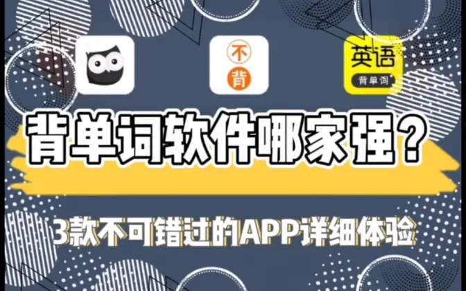
6:21英语背单词软件哪家强？3款小众软件体验推荐
Which vocabulary app is best? I tested three lesser-known ones
A side-by-side test that helps viewers pick one app.
I make app and gadget reviews on Bilibili and AI tool comparisons on RedNote, an Instagram-like social platform. I also write articles for campus groups and design poster templates for MAKA, a Canva-like design platform. Now I'm learning to build web tools, too.
MS in Information Systems at Northeastern University, Silicon Valley campus. Before that, three years as a fund-of-funds researcher at Huatai Securities Asset Management in Shanghai.
My Bilibili videos have 150K+ views across 23 videos. My RedNote posts have 3,399 likes and saves, and the top one has 1,215.
Most of this work is in Chinese. Each piece has an English summary and what I did.
App and gadget reviews on my Bilibili channel. I plan, film, and edit them myself.

6:21英语背单词软件哪家强？3款小众软件体验推荐
A side-by-side test that helps viewers pick one app.
8款效率工具APP，对拖延有用吗？
Sorts eight apps into four jobs: to-dos, time, journaling, and habits.
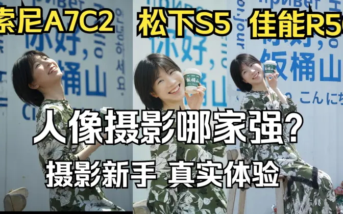
6:03人像相机哪家强？索尼 松下 佳能 原片直出对比
Straight-out-of-camera photos from three cameras, from a beginner's point of view.
win二合一笔记本当平板两用？手写和iPad还差亿点点
A hands-on comparison of the YOGA C740 and iPad Pro 10.5.
Short posts on my RedNote profile (小红书), an Instagram-like social platform. The site may ask you to open the app.
AI文笔对比！同行衬托下 DeepSeek 真的很牛
How several AI models write, compared. DeepSeek came out on top.
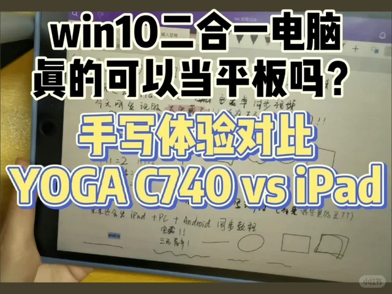
Video249 likesiPad Pro 和 win 二合一电脑 YOGA 手写体验对比
The same comparison as the Bilibili video, made for RedNote.
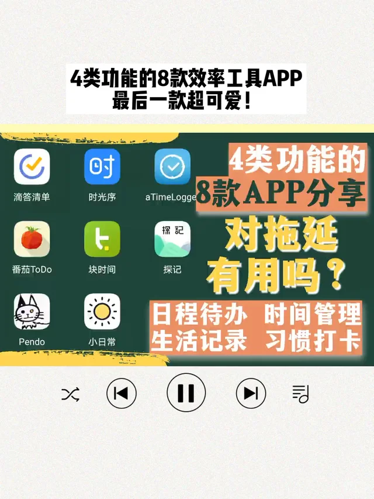
Video35 likes吐血整理 8 款效率工具 APP，学生党必备
One topic, two platforms: the 52K-view video, retold for RedNote.
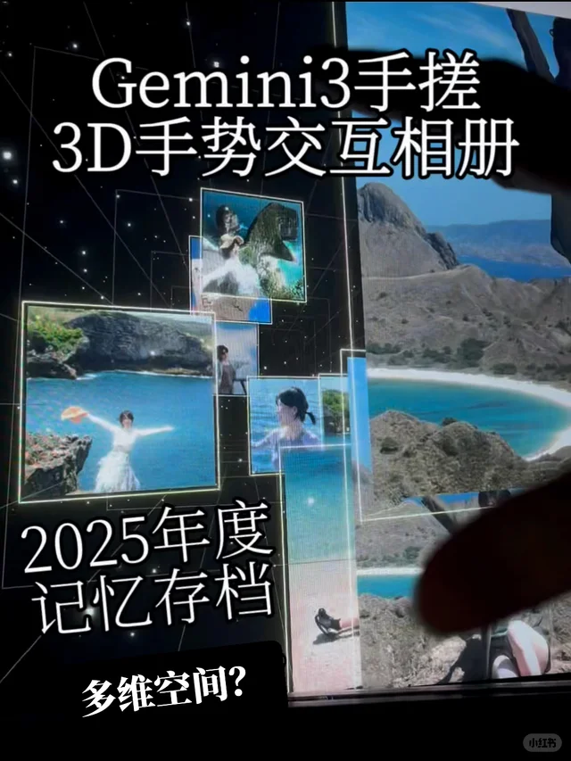
Video27 likes让AI参考星际穿越帮我生成2025年度相册
The demo clip of my 3D project. See it on the Built page.
Sun Yat-sen University's student new-media channel. I was Vice Head of its New Media Department.
录取通知书这样设计，是想骗我再考一次大学？
被热点绑架的年轻人
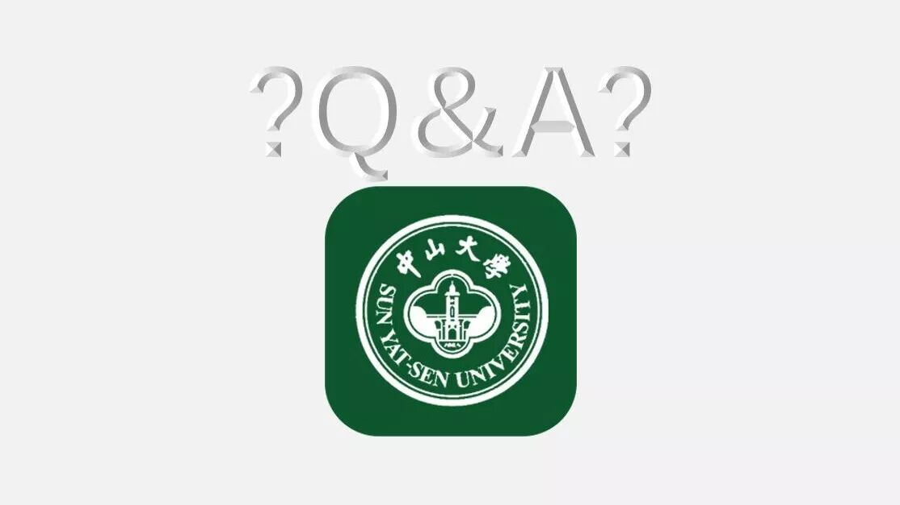
中山大学APP的常见问题解答
A student club, my class, and the Student Affairs Office.
中秋不回家+区块链讲座=有书拿？
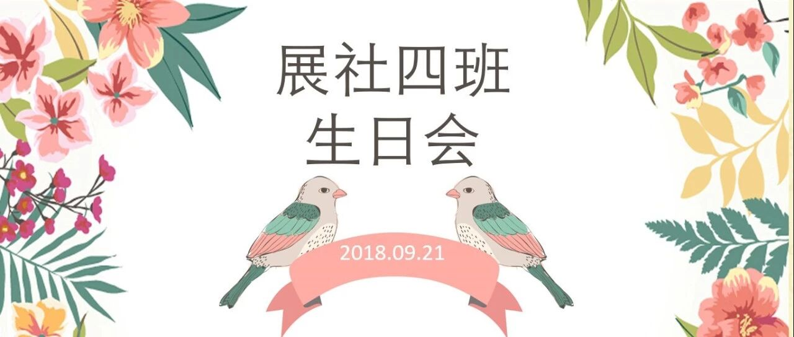
国庆节来临+展四生日会=好好学习小礼包？
猪猪有话说（三）
A student startup for skill videos. I ran its WeChat account and planned online campaigns that gained 1,000+ followers.
搜EASY | 不来点复古风怎么好意思过春夏
校园iCON | 高小鱼：我吃得超开心
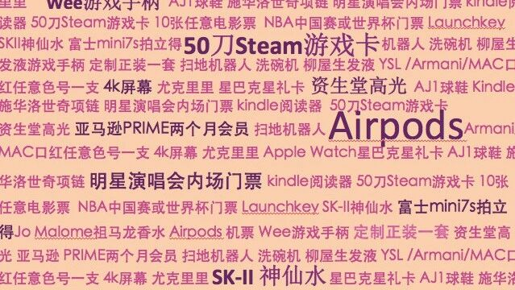
真实抽奖 | 释放你的购物欲望
Phone poster templates I designed as a contract designer for MAKA, a Canva-like design platform: daily mood cards, study posters for tutoring centers, and wedding photo promotions.
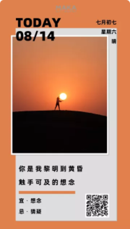
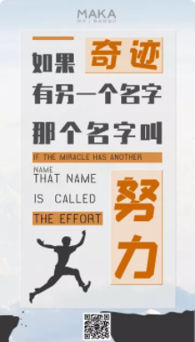
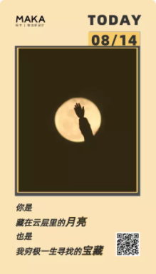
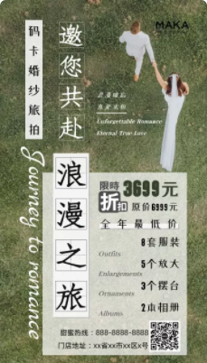
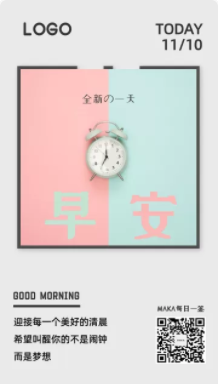
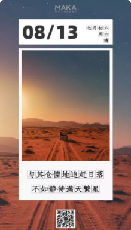
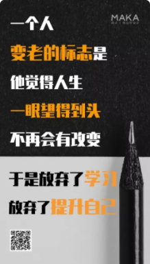
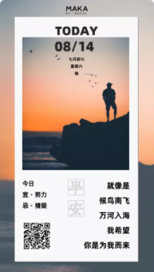
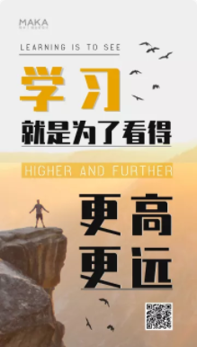
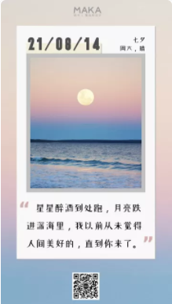
Things I made for the browser.
Personal project, December 2025
A 3D timeline of my 2025 photos, inspired by the tesseract scene in Interstellar. Open or close your hand in front of the camera to move along it. I built it with AI assistance.
React, Three.js, MediaPipe hand tracking, Google AI Studio
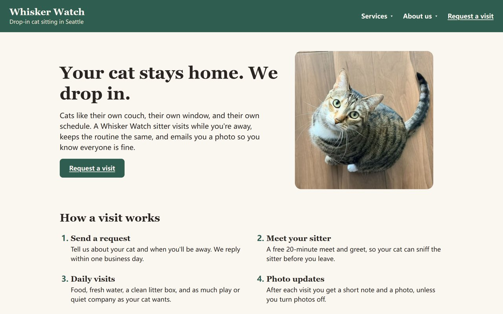
Course project, INFO 6150 Web Design and User Experience Engineering, Fall 2026
INFO 6150 taught me the basics of web design, from layout, color, and typography to forms and motion, and how to build them with semantic HTML, CSS, and JavaScript. Whisker Watch, a landing page with a request form, is one of my assignments.
HTML, CSS, JavaScript
AI-assisted Python scripts that automated repetitive work for 180+ fund products and cut manual workload by 50%. Internal tool, so there is no public code.
A Python pipeline that collected and cleaned 2M+ stock forum comments and turned them into a daily sentiment index. Course project, 98/100.
I studied finance, spent three years researching funds, and kept making content on the side. Now I'm studying information systems to build the tools behind it.
Plan, film, and edit review videos. My top video has 64K views.
WeChat articles for student media, clubs, and a startup, from FAQs to opinion pieces.
Contract designer for MAKA, a Canva-like design platform: phone poster templates for its marketplace. Also article covers and layouts.
Responsive pages from my web design course, and a 3D web app made with AI assistance.
Automation, models, and research charts from three years in fund research.
I write in both, and explain Chinese work to English readers.
Education
MS in Information Systems, Silicon Valley campus
2026 – 2028, expected
Work
Fund-of-funds researcher, Shanghai
2023 – 2026
Education
Master of Finance, FinTech. GPA 3.97/4.00
2021 – 2023
Education
B.Econ in Finance. Vice Head of New Media, SYSU Youth
2017 – 2021
2022
Fund research. Built 100+ charts for research reports.
2022
FOF investment. A 30+ factor fund screening model in Python.
2022
Quantitative and asset allocation research.
2021 – 2022
Product design. Automated weekly reports with Python and VBA.
2021
Equity research, internet and media.
2021
IPO project, financial institutions group.
2020 – 2021
Platform product operations. Grew a user community from 90+ to 800+.
2020
New consumer product R&D.
2022
Data analyst. A sales-forecasting model for an F&B brand, R² above 0.7.
2021
2M+ forum comments in Python. Course project, 98/100.
2021
SAS. Backtested Sharpe ratio of 1.5. Course project, 93/100.
2026, third author
Song, K., Ren, X., Li, L., & Xu, Z. Pacific-Basin Finance Journal, 98, 103081.
2023, fourth author
Chen, L., Zhang, Y., Lin, J., & Li, L. Statistical Research, (7).